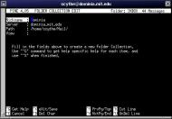
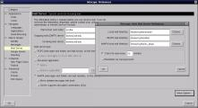
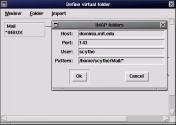

"Linux Gazette... making Linux just a little more fun!"
IMAP on Linux: A Practical Guide
By David Jao
ABSTRACT: The Internet Mail Access Protocol, Version 4rev1
(IMAP4rev1), allows users to access and maintain hierarchical
collections of e-mail folders on a remote server over the Internet.
The "client-server" nature of the IMAP paradigm allows e-mail
programs to enjoy the same benefits of portability
and network
transparency that graphical programs have gained from the X11
Windowing system. In this article, we describe how to set up client
and server software on Linux to use IMAP for managing your mail. In
addition, we explain the benefits and drawbacks of IMAP, and
discuss when and under what situations it makes sense to use IMAP.
1. Why IMAP?
How do you read your e-mail today? Most likely, you start up a
program like pine or Netscape to read your mail. You probably
have only one Inbox for each e-mail account you own. Since
a few month's worth of accumulated e-mail is much too unwieldy
for a single Inbox, your mail messages are almost certainly
organized into separate mail folders for easy cataloging and
maintenance. Unless you use IMAP already, these mail folders are
sitting on your local disk (or in your home directory on a remote
account).
However, there are a number of problems with storing mail folders on a
local disk:
-
With a text-based mail client, you have to log in to the account
that holds your mail folders in order to check your mail. This is not
so bad if you have one account, but it can be tough juggling multiple
accounts this way. For example, try moving a large number of messages
from a folder in one account to a folder in another account.
-
With a graphical mail client, it can be difficult or impossible to
manage your mail over a low bandwidth link. This point merits consideration
since many people prefer graphical clients and have low bandwidth links.
-
It's not very easy to switch clients when all your mail folders are
formatted for one particular program. Many users are finding it
increasingly useful to be able to tailor their choice of mail client
to best suit their current situation.
IMAP solves all these problems at once. The simple idea behind
IMAP is that mail folders
are stored on a central server and accessed via a commoditized, widely
supported protocol. Using IMAP, you can:
-
access your mail folders from any machine, anywhere, as long as
an IMAP client is installed,
-
manage multiple mail folders belonging to multiple e-mail accounts from
a single client,
-
switch mail clients (Netscape, pine, Eudora) at will, and automatically
carry all your mail folders with you.
The analogy to the X11 windowing protocol is helpful. In MS Windows, a
graphical program running on a computer is inextricably bound to that
computer's display. In contrast, under X, a program running
on one machine can display itself on another machine through a
well defined, commoditized protocol. The resulting
network transparency is a critical advantage in today's highly interconnected
world. IMAP offers the same kind of flexibility: your e-mail folders
(that is, all the data you really care about) are stored on a central
server, so that instead of being inextricably bound to one mail
program on one machine, they can be transparently accessed over the
network by any compliant program.
2. IMAP Server Installation
So now you're psyched about IMAP and want to use it, right?
The first step is to install an IMAP server. If your ISP already runs
an IMAP server for you, then you might want to just use their server
instead. An advantage of this route is that you can access your mail
from anywhere without requiring your computer to be on. A disadvantage
is that you have to dial in to your ISP to access your mail.
In any case, most ISPs don't provide IMAP services, so you'll most
likely have to run IMAP on your own computer anyway.
Without further ado, here's a quick and dirty set of instructions
for installing the University
of Washington IMAP server.
First, get and extract the latest version (4.4 as of this writing):
[root@localhost ~]# lynx ftp://ftp.cac.washington.edu/imap/imap-4.4.tar.Z
[root@localhost ~]# tar xzvf imap-4.4.tar.Z
[root@localhost ~]# cd imap-4.4
Type one of "make lnx", "make sl5", "make slx". The first is for
traditional systems, the second is for systems using libc5 and shadow
passwords, and the third is for glibc-based systems that use shadow
passwords.
[root@localhost imap-4.4]# make lnx
Install the newly compiled file:
[root@localhost imap-4.4]# install -s -m 755 -o root -g mail imapd/imapd /usr/sbin
Add the following line to your /etc/inetd.conf (it may already be
there; if so, uncomment it out):
imap stream tcp nowait root /usr/sbin/tcpd /usr/sbin/imapd
Set up your hosts.allow and hosts.deny files to restrict IMAP access
to authorized domains only. This step is highly recommended, as the
University of Washington IMAP server has had some fairly serious
security
vulnerabilities in the past.
In /etc/hosts.deny add the line
imapd: ALL
In /etc/hosts.allow add the machines and domains that you want
to allow to access your IMAP server:
imapd: your.local.host.com
imapd: .yourisp.com
imapd: .yourschool.edu
Finally, restart inetd and your server is ready to go:
[root@localhost ~]# killall -HUP inetd
2.1. Distribution-Specific Installation Instructions
If you are running a Linux distribution that comes with a package
manager, you can install a precompiled IMAP server if you want.
RedHat 5.2 instructions:
lynx ftp://ftp.redhat.com/pub/redhat/redhat-5.2/i386/RedHat/RPMS/imap-4.4-2.i386.rpm
rpm -Uvh imap-4.4-2.i386.rpm
Debian 2.0 instructions:
lynx ftp://ftp.debian.org/debian/dists/stable/main/binary-i386/mail/imap_4.2-1.deb
dpkg -i imap_4.2-1.deb
After installing these packages, you'll still have to go back and edit
/etc/inetd.conf, /etc/hosts.deny, and
/etc/hosts.allow yourself as described above.
3. IMAP Client Configuration
Once you've set up your server, configuring an IMAP client to use the
server is a snap. The basic procedure is:
- Pick a directory on the server system to hold all your mail folders.
You need to have read and write access to this directory.
I usually use $HOME/Mail. Create this directory if it doesn't exist.
- Tell your IMAP client the name of your IMAP server, your username
on that server, and the directory above where your mail folders live.
- Now you can create and delete remote folders, and move messages to and
from remote folders, just as if they were local folders, using the same
techniques that you already use in your mail program to manipulate local
folders.
Here's three examples of programs that I actually use:
3.1. Pine 4.05
Pine is available from http://www.washington.edu/pine/.
It is very popular in the Unix world. The 4.0x versions added support
for online IMAP folder access.
To configure pine, press S to enter Setup, L to configure your collection
list, and then A to add a collection. Enter your server, username, and
mail folder directory as described above.
Simple, isn't it? Pine supports multiple IMAP collections, so you can
add as many as you want and manage them all from one place.

Screenshot of pine configuration
3.2. Netscape Communicator 4.07
Netscape Communicator is an integrated web browser and Mail/News
reader that is in fairly widespread use today. The 4.07 version is
suitable for light mail processing, but it will crash if you give it a
folder with well over 1000 messages (try it). Netscape Communicator is
available from http://home.netscape.com/.
To set Netscape up for IMAP, select Preferences under the "Edit" menu,
expand the "Mail & News" tab,
click on the "Mail Server" entry, and enter in your username and your
IMAP server. Obviously, make sure the server type "IMAP4" is selected. Click
on the "More Options" box and enter in the mail folder directory you
selected above. Finally, make sure the "Move Deleted Messages to Trash"
box is not checked; this feature is rather broken and
IMAP already provides flags to deal with deleted messages.
Netscape 4.0x does not support multiple IMAP collections, and it cannot
automatically copy sent mail to a remote IMAP folder. Netscape 4.5 does
support these things, but I have found the IMAP client in Netscape 4.5 to
be far too unstable for real work.

Screenshot of Netscape configuration
3.3. TkRat 1.2
TkRat is my favorite graphical mail client right now. It also happens
to be the only Open Source
IMAP client I know (it's licensed under a BSD style license). It is
available from http://www.dtek.chalmers.se/~maf/ratatosk/.
In TkRat, select "New/Edit Folder" from the Admin menu. Then select "IMAP
Folders" from the Import menu, and type in your username, IMAP server,
and a wildcard matching the folders in your mail folder directory.
Note that TkRat expects a wildcard rather than a directory.

Screenshot of TkRat configuration
4. Important Usage Notes
Here's some things about IMAP that are not obvious, but are very useful to
know.
4.1. Folder hierarchies
Currently, a limitation of the
UW IMAP server is that a folder cannot contain both messages and
subfolders. That is, a folder can either contain subfolders, or
messages, but not both. To specify a folder that contains subfolders,
you need to add a / to the end of its name.
Here's some examples:
Courses/ is a folder that can only contain subfolders.
Courses/Calculus is a subfolder of Courses/.
It can only contain messages.
Courses/Languages/ is a subfolder of Courses/
that can only contain further subfolders.
4.2. The Inbox
The folder name INBOX,
Inbox, or any capitalization thereof, is reserved for
your inbox. You can't create a folder of your own with this name.
5. Security Considerations
Running an IMAP server adds another system daemon, and thus, another
potential security vulnerability. If you're not going to make use of
the capabilities of IMAP, you're probably better off not installing
it.
A separate issue is the use of plaintext passwords for logins and
authentication. Like most services, IMAP sessions are sent as plaintext
over the Internet. Many people feel that sending passwords over the
Internet as plaintext is no big deal. These people tend
to use telnet, ftp, POP3, etc. without reservations. However, if
you don't like sending your
password over the Internet unprotected, you have precious few options:
- Use Netscape
Messaging Server, which supports IMAP over SSL. Unfortunately,
there's no Linux version available, and the software costs $1295 besides.
- Compile the Cyrus IMAP
Server with Kerberos authentication support.
- Use Secure
Shell to transmit your IMAP session over an encrypted tunnel.
- Install imp (a web-to-IMAP
gateway) on your machine and access it through an SSL web server.
Unfortunately, all of these techniques are beyond the scope of this
article. The fact of the matter is, most of the data on the Internet is
transmitted as plaintext these days. If it were easy to conceal this
data, people would be doing it already.
6. Conclusion
Fewer and fewer people are able to handle their daily volume of e-mail
from one client on one machine all the time. While many are dealing
with the e-mail mobility problem using the existing infrastructure of telnet,
remote X displays, and distributed file systems, IMAP alone offers
a comprehensive, application level solution tailored specifically for
this need. By offering network transparency without sacrificing
functionality, IMAP promises to revolutionize mobile mail access and change
the way we read our mail for the better. I except that user demand will
soon force IMAP support to be a required feature on all mail clients.
In short, if you're really happy with the way you read your mail now,
then you don't need to bother with IMAP, but if you're itching for
some additional flexibility in managing your mail, you should
definitely consider adopting IMAP.
7. Additional References
IMAP4rev1 RFC
A paper comparing IMAP
and POP
A long list of products
supporting IMAP
Copyright © 1998, David Jao
Published in Issue 35 of Linux Gazette, December 1998
![[ TABLE OF CONTENTS ]](../gx/indexnew.gif)
![[ FRONT PAGE ]](../gx/homenew.gif)


{kind=link}
{kind=link}
{kind=link}